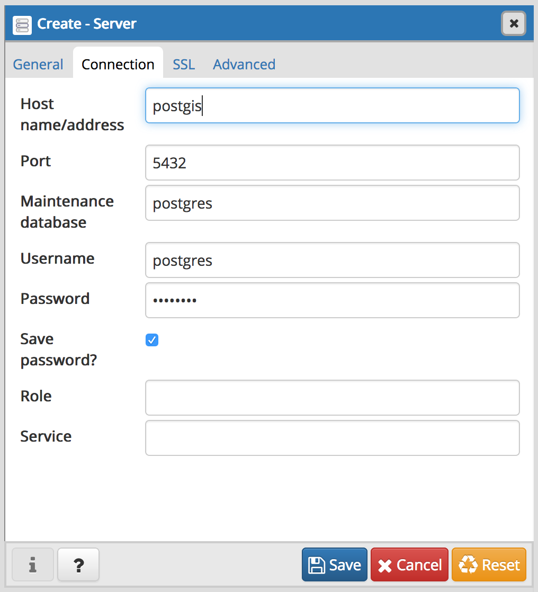
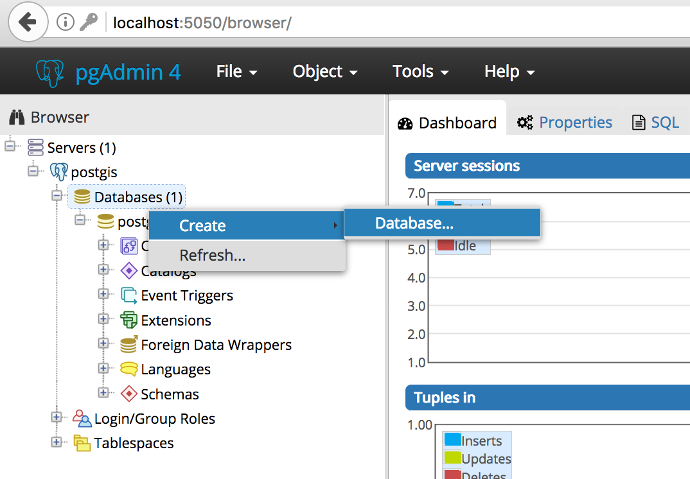
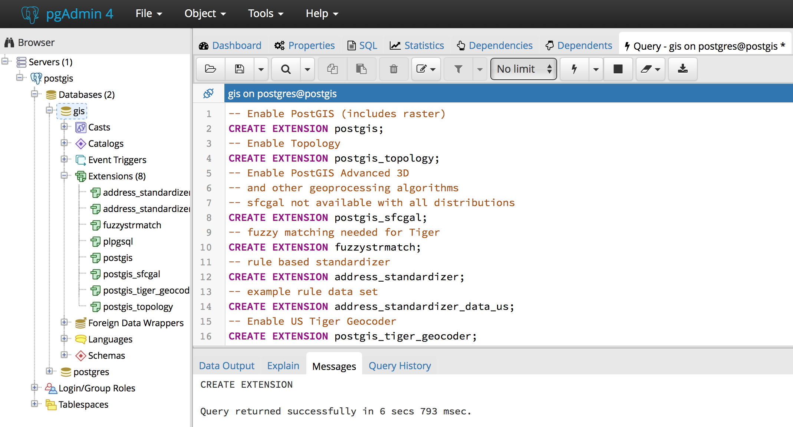

Docker PostGIS and PGAdmin
In this article, I will show you how to:
- Create a Postgis docker image
FROM postgresand publish it to hub.docker.com. - Create a Geospacial Database environment in Docker Compose with PostGIS and PGAdmin4.
- Use PGAdmin4 to create a database an enable Geospacial extensions.
1. Build a PostGIS Docker Image
- A
Dockerfilecontains instructions to build an image. - Start by extending an existing PostgreSQL 10 Debian image:
FROM postgres:10. - Use
apt-getto install required PostGIS extensions. - Use
docker buildto create the image, then push it to docker hub.
Creating the Dockerfile
# Extend exiting PostreSQL 10 Debian image: https://hub.docker.com/_/postgres/
FROM postgres:10
MAINTAINER Mihai Criveti
# Install PostGIS packages
RUN apt-get update
RUN apt-get install --no-install-recommends --yes \
postgresql-10-postgis-2.4 postgresql-10-postgis-2.4-scripts postgresql-contrib
Building the image
- Turn the
Dockerfileinto a usable image usingdocker build. - Tag the image with a namespace (the one used on Docker Hub):
cmihai
docker build --tag cmihai/postgis .
Uploading the image to Docker Hub
- Push the Dockerfile, README and docker-compose.yaml examples to github
- Test the image end to end
- Push the image to docker hub
export DOCKER_ID_USER="username"
docker login
docker push
docker tag cmihai/postgis $DOCKER_ID_USER/my_image
docker push $DOCKER_ID_USER/my_image
2. Composing multiple images with docker compose
- PGAdmin4 is a web based PostgreSQL Administration and SQL Development environment.
- Docker Compose can link an existing dpage/pgadmin4 image from Docker Hub to
cmihai/postgis - Login to http://localhost:5050
admin:adminafter runningdocker-compose up
Create docker-compose.yaml
version: '3.1'
services:
postgis:
image: cmihai/postgis
container_name: postgis
ports:
- '5432:5432'
environment:
POSTGRES_PASSWORD: postgres
volumes:
- pgdata:/var/lib/postgresql/data
pgadmin4:
image: dpage/pgadmin4
container_name: pgadmin4
ports:
- '5050:80'
environment:
PGADMIN_DEFAULT_EMAIL: admin
PGADMIN_DEFAULT_PASSWORD: admin
links:
- postgis
volumes:
pgdata:
Starting the services
Use docker-compose up to start the services:
docker-compose up
3. Create a database and enable PostGIS with PGAdmin4
-
Login to pgadmin4: http://localhost:5050 with admin:admin
-
Add a connection to postgis with user/pass
postgres:postgres -
Create a new database and call it
gis -
Open the SQL Query Tool on the newly created
gisdatabase: In the Browser window, select Servers > postgis > Databases > gis, the run Tools > Query Tool from the Menu. -
Run the following SQL code to enable postgis database extensions:
-- Enable PostGIS (includes raster)
CREATE EXTENSION postgis;
-- Enable Topology
CREATE EXTENSION postgis_topology;
-- Enable PostGIS Advanced 3D and other geoprocessing algorithms
CREATE EXTENSION postgis_sfcgal;
-- Fuzzy matching needed for Tiger
CREATE EXTENSION fuzzystrmatch;
-- Rule based standardizer
CREATE EXTENSION address_standardizer;
-- Example rule data set
CREATE EXTENSION address_standardizer_data_us;
-- Enable US Tiger Geocoder
CREATE EXTENSION postgis_tiger_geocoder;
Expected Outcome: gis database with geospacial extensions
Query returned successfully: - gis > Extensions now lists a number of GIS extensions:
postgis, postgis_sfgal, postgis_tiger_geocoder, postgis_topology, fuzzystrmatch, address_standardizer and address_standardizer_data_us. - gis > Schema > public > Functions has been populated with a high number (1000+) of GIS specific functions.
- A new table called
spacial_ref_sysis now available under gis > Schemas > public > Tables. - New schemas:
tiger,tiger_dataandtopologyhave been created.
Next Steps:
- Load Geospacial data from shapefile, KML, GeoJSON, etc.
- Connect GIS Desktop clients such as QGIS.
- Connect to PostGIS using Python (ex: geopandas).
- Perform geospacial queries and analysis on the data.
Links and Reference:
- Github Repository with Dockerfile and docker-compose.yaml: https://github.com/crivetimihai/geospacial-engineering
- Docker Image: https://hub.docker/com